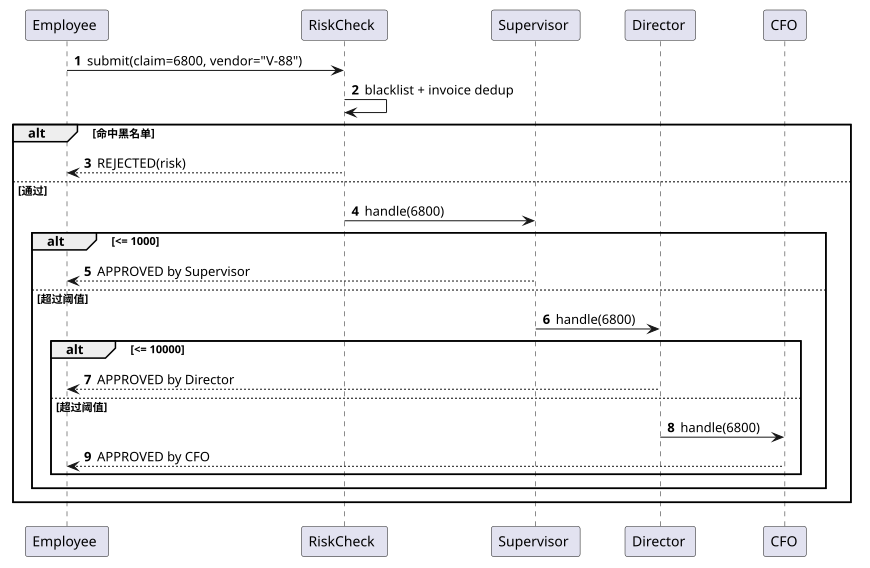

用户工单难度不同：改密码 FAQ 就能答，连不上要找技术支持，服务器 500 得工程师上。如果写成层层嵌套的 if，每加一级就再缩进一层。职责链把每一级串起来：能处理就处理，处理不了就交给下一级。
坏写法是嵌套判断：
if (level == 1) faq();
else if (level == 2) tech();
else if (level == 3) engineer();
else printf("没人处理");每加一级就改这段；某一级想“先看情况再决定转不转”，else if 根本表达不了。
职责链把“判断”分散到各级：每级只回答“这事我管不管”，不管就 next。顺序改了只改接线。
左边是工单，中间三级处理者，右边是兜底工程师。
C 版处理者是结构体 + next 指针；C++ 版用 unique_ptr 串链，父节点持有子节点。
/* 职责链 · 客服逐级升级
* gcc -std=c11 -Wall -Wextra chain.c -o chain
*/
#include <stdio.h>
typedef struct handler handler_t;
typedef int (*handle_fn)(int level, const char *msg);
struct handler {
const char *name;
int max_level;
handle_fn fn;
handler_t *next;
};
static int faq(int level, const char *msg) {
if (level <= 1) { printf(" FAQ：%s\n", msg); return 1; }
return 0;
}
static int tech(int level, const char *msg) {
if (level <= 2) { printf(" 技术支持：%s\n", msg); return 1; }
return 0;
}
static int engineer(int level, const char *msg) {
printf(" 工程师：%s\n", msg); return 1; (void)level;
}
static void dispatch(handler_t *h, int level, const char *msg)
{
printf("工单 L%d「%s」\n", level, msg);
for (; h; h = h->next)
if (h->fn(level, msg)) { printf(" -> %s 接手\n", h->name); return; }
printf(" 没人处理\n");
}
int main(void)
{
handler_t eng = { "工程师", 9, engineer, NULL };
handler_t techh= { "技术支持", 2, tech, &eng };
handler_t faqh = { "FAQ", 1, faq, &techh };
dispatch(&faqh, 1, "怎么改密码");
dispatch(&faqh, 2, "客户端连不上");
dispatch(&faqh, 3, "服务器 500");
return 0;
}工单 L1「怎么改密码」 FAQ：怎么改密码 -> FAQ 接手 工单 L2「客户端连不上」 技术支持：客户端连不上 -> 技术支持 接手 工单 L3「服务器 500」 工程师：服务器 500 -> 工程师 接手
// 职责链 · 客服逐级升级
// g++ -std=c++17 -Wall -Wextra chain.cpp -o chain_cpp
#include <cstdio>
#include <memory>
#include <string>
class Handler {
public:
explicit Handler(std::string name, int maxLevel)
: name_(std::move(name)), maxLevel_(maxLevel) {}
virtual ~Handler() = default;
Handler& setNext(std::unique_ptr<Handler> next) {
next_ = std::move(next);
return *next_;
}
void dispatch(int level, const std::string& msg) {
std::printf("工单 L%d「%s」\n", level, msg.c_str());
Handler* h = this;
while (h) {
if (h->canHandle(level, msg)) {
std::printf(" -> %s 接手\n", h->name_.c_str());
return;
}
h = h->next_.get();
}
std::puts(" 没人处理");
}
protected:
virtual bool canHandle(int level, const std::string& msg) = 0;
std::string name_;
private:
int maxLevel_;
std::unique_ptr<Handler> next_;
};
class Faq final : public Handler {
public:
Faq() : Handler("FAQ", 1) {}
protected:
bool canHandle(int level, const std::string& msg) override {
if (level <= 1) { std::printf(" FAQ：%s\n", msg.c_str()); return true; }
return false;
}
};
class Tech final : public Handler {
public:
Tech() : Handler("技术支持", 2) {}
protected:
bool canHandle(int level, const std::string& msg) override {
if (level <= 2) { std::printf(" 技术支持：%s\n", msg.c_str()); return true; }
return false;
}
};
class Engineer final : public Handler {
public:
Engineer() : Handler("工程师", 9) {}
protected:
bool canHandle(int level, const std::string& msg) override {
(void)level;
std::printf(" 工程师：%s\n", msg.c_str());
return true;
}
};
int main()
{
auto faq = std::make_unique<Faq>();
auto tech = std::make_unique<Tech>();
auto eng = std::make_unique<Engineer>();
faq->setNext(std::move(tech)).setNext(std::move(eng));
faq->dispatch(1, "怎么改密码");
faq->dispatch(2, "客户端连不上");
faq->dispatch(3, "服务器 500");
return 0;
}工单 L1「怎么改密码」 FAQ：怎么改密码 -> FAQ 接手 工单 L2「客户端连不上」 技术支持：客户端连不上 -> 技术支持 接手 工单 L3「服务器 500」 工程师：服务器 500 -> 工程师 接手
| 角色 | C 版 | C++ 版 | 差别意味着什么 |
|---|---|---|---|
| 链怎么接 | handler.next 指针 | unique_ptr<Handler> | C 手动接，C++ 所有权随链 |
| 判断在哪 | 每级的 handle_fn | 每级的 canHandle | 都分散到各级 |
| 兜底 | 最后一级无条件处理 | 最后一级无条件处理 | 没有兜底就会丢请求 |
| 顺序调整 | 改 next 指向 | 改 setNext 调用 | 都不改各级实现 |
参考教程：refactoringguru.cn
生产实例：报销审批链（风控 / 主管 / 总监 / CFO）
报销审批按金额分级：1000 以下主管，10000 以下总监，再往上 CFO。最先过的不是金额，而是风控黑名单：失信供应商、重复发票直接拒绝。职责链把每一关串起来，谁先命中谁负责，后级不再执行。

@startuml
autonumber
participant "Employee" as E
participant "RiskCheck" as R
participant "Supervisor" as S
participant "Director" as D
participant "CFO" as C
E -> R: submit(claim=6800, vendor="V-88")
R -> R: blacklist + invoice dedup
alt 命中黑名单
R --> E: REJECTED(risk)
else 通过
R -> S: handle(6800)
alt <= 1000
S --> E: APPROVED by Supervisor
else 超过阈值
S -> D: handle(6800)
alt <= 10000
D --> E: APPROVED by Director
else 超过阈值
D -> C: handle(6800)
C --> E: APPROVED by CFO
end
end
end
@enduml